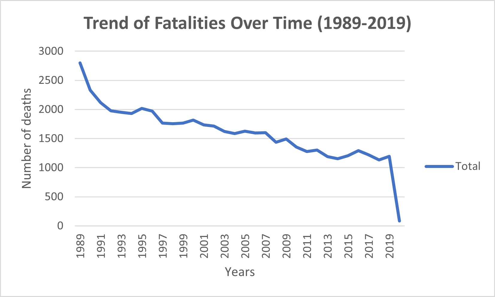
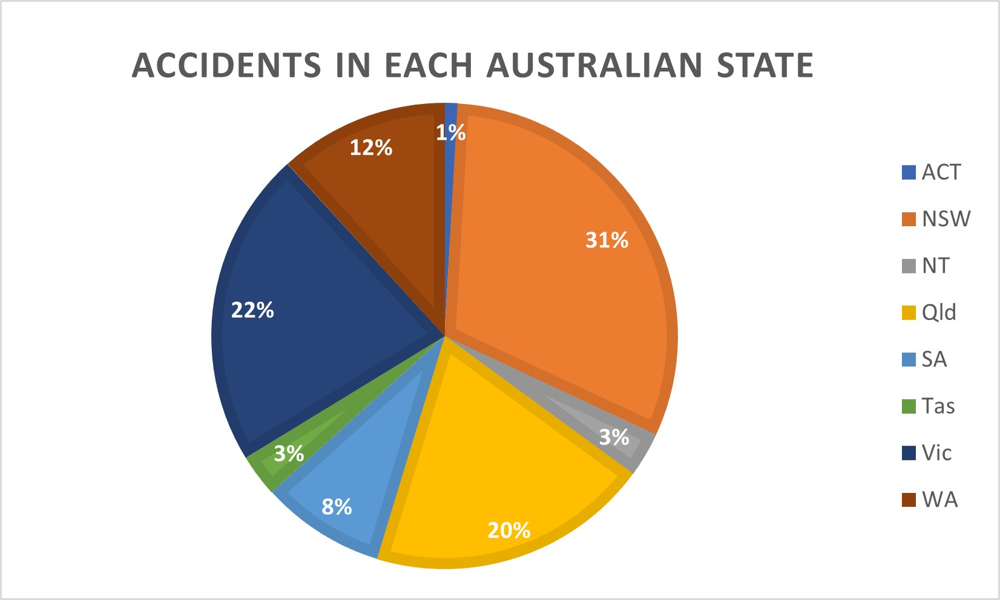
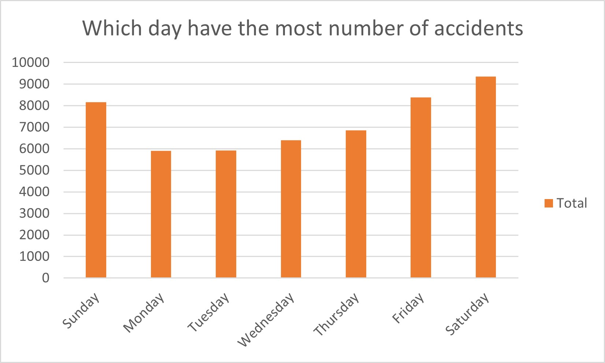

In this lab, you will be given a sample data set and asked to identify the different data and attribute types. You will also think about some questions about this data set that might be answered by a visualisation.
Make a sketch of how you think your visualisation might look and add to this document.
Question 1 - What is the trend in fatalities over the years?

Data used: Number of fatality column, Year column. The trend of car fatalities over the years.
Question 2 - Which state has the highest percentage of accidents?

Data used: Crash ID column, State column. NSW has the highest percentage of Australia’s state accidents.
Question 3 – Which day of the week has the most number of accidents?

Data used: Crash ID column, Day of the week column. Saturday has the highest number of accidents.